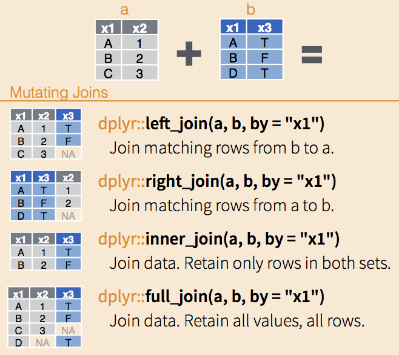
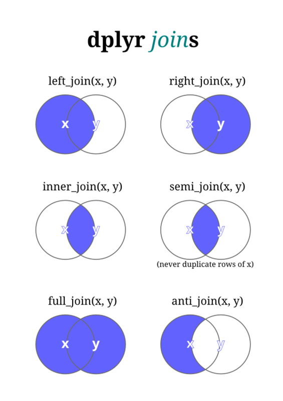
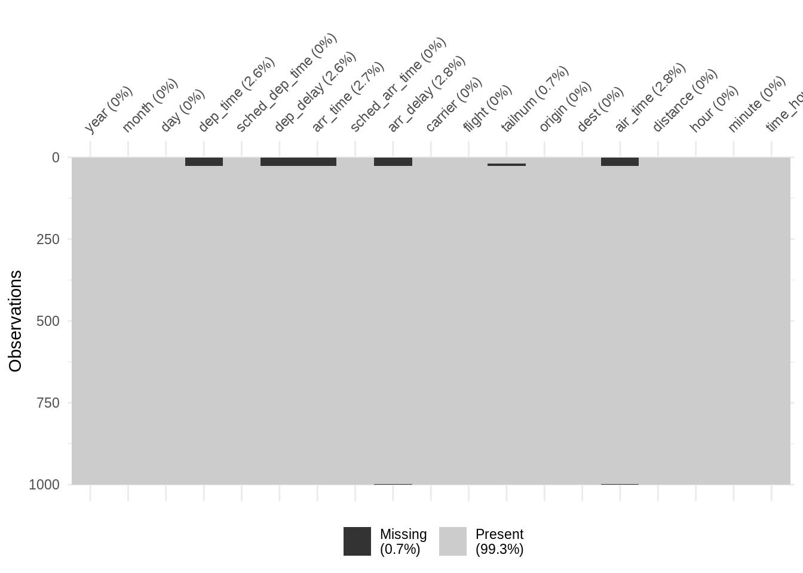

Chapter 10 Joins
Joins are an extremely powerful tool for data science, allowing us to combine two datasets by matching columns.
Some common scenarios:
- Data from two different sources for the same units
- Pre- and post-treatment
- Multi-round experiments / survey panels
- Advertising and vote share
- Data on different levels
- Students in classrooms in schools
- Census block groups in counties in states
10.1 Types of joins


Figure 10.1: Join operations combine two dataframes based on one or more matching columns. Different join operations keep different rows from the combination. Sources: https://data-lessons.github.io/gapminder-R/; https://notchained.hatenablog.com/entry/2015/01/03/160700
- Suppose we have two dataframes,
leftandright
library(tidyverse)
left = tribble(
~animal, ~zoo,
'aardvark', 'Sacramento',
'aardvark', 'San Diego',
'chimpanzee', 'San Diego',
'zebra', 'San Diego'
)
right = tribble(
~animal, ~food,
'aardvark', 'insects',
'chimpanzee', 'insects',
'chimpanzee', 'fruit',
'velociraptor', 'animals'
)- Left join: keep all of the rows and columns from
left; add columns fromright
left_join(left, right, by = 'animal')## # A tibble: 5 x 3
## animal zoo food
## <chr> <chr> <chr>
## 1 aardvark Sacramento insects
## 2 aardvark San Diego insects
## 3 chimpanzee San Diego insects
## 4 chimpanzee San Diego fruit
## 5 zebra San Diego <NA>- Right join: keep all of the rows and columns from
right; add columns fromleft
right_join(left, right, by = 'animal')## # A tibble: 5 x 3
## animal zoo food
## <chr> <chr> <chr>
## 1 aardvark Sacramento insects
## 2 aardvark San Diego insects
## 3 chimpanzee San Diego insects
## 4 chimpanzee San Diego fruit
## 5 velociraptor <NA> animals- Full join: keep all rows and columns from both
leftandright
full_join(left, right, by = 'animal')## # A tibble: 6 x 3
## animal zoo food
## <chr> <chr> <chr>
## 1 aardvark Sacramento insects
## 2 aardvark San Diego insects
## 3 chimpanzee San Diego insects
## 4 chimpanzee San Diego fruit
## 5 zebra San Diego <NA>
## 6 velociraptor <NA> animals- Inner join: keep all columns, but only rows that match
inner_join(left, right, by = 'animal')## # A tibble: 4 x 3
## animal zoo food
## <chr> <chr> <chr>
## 1 aardvark Sacramento insects
## 2 aardvark San Diego insects
## 3 chimpanzee San Diego insects
## 4 chimpanzee San Diego fruit- Anti-join: keep all columns from
left, but only the rows that don’t match
anti_join(left, right, by = 'animal')## # A tibble: 1 x 2
## animal zoo
## <chr> <chr>
## 1 zebra San Diego10.2 Hazards
Joins can create a number of hazards.
- Missing values from left, right, and full joins
- In a left join, rows from
leftthat don’t match will have missing values in the columns fromright
- In a left join, rows from
- Row counts can be difficult to predict in advance
- Rows will be copied if they match multiple times
- Column names can be changed if they’re repeated across dataframes but not used for matching
To manage these hazards
- Use
anti_join()to figure out where missing values will be - Use
select()withdistinct()to check for unexpected duplications - Use
names()to check column names
10.2.1 Data
To examine these hazards, we’ll use the nycflights13 dataset, which includes all flights that departed New York City in 2013.
The dataset comprises 5 different tables, which of which can be linked to the others using joins. We’ll focus on combining flights with airports and weather.

Figure 10.2: Linking fields in the tables of the nycflights13 dataset.
library(tidyverse)
library(nycflights13)
library(visdat)
flights## # A tibble: 336,776 x 19
## year month day dep_time sched_dep_time dep_delay arr_time sched_arr_time arr_delay carrier
## <int> <int> <int> <int> <int> <dbl> <int> <int> <dbl> <chr>
## 1 2013 1 1 517 515 2 830 819 11 UA
## 2 2013 1 1 533 529 4 850 830 20 UA
## 3 2013 1 1 542 540 2 923 850 33 AA
## 4 2013 1 1 544 545 -1 1004 1022 -18 B6
## 5 2013 1 1 554 600 -6 812 837 -25 DL
## 6 2013 1 1 554 558 -4 740 728 12 UA
## 7 2013 1 1 555 600 -5 913 854 19 B6
## 8 2013 1 1 557 600 -3 709 723 -14 EV
## 9 2013 1 1 557 600 -3 838 846 -8 B6
## 10 2013 1 1 558 600 -2 753 745 8 AA
## # … with 336,766 more rows, and 9 more variables: flight <int>, tailnum <chr>, origin <chr>,
## # dest <chr>, air_time <dbl>, distance <dbl>, hour <dbl>, minute <dbl>, time_hour <dttm>airports## # A tibble: 1,458 x 8
## faa name lat lon alt tz dst tzone
## <chr> <chr> <dbl> <dbl> <dbl> <dbl> <chr> <chr>
## 1 04G Lansdowne Airport 41.1 -80.6 1044 -5 A America/New_York
## 2 06A Moton Field Municipal Airport 32.5 -85.7 264 -6 A America/Chicago
## 3 06C Schaumburg Regional 42.0 -88.1 801 -6 A America/Chicago
## 4 06N Randall Airport 41.4 -74.4 523 -5 A America/New_York
## 5 09J Jekyll Island Airport 31.1 -81.4 11 -5 A America/New_York
## 6 0A9 Elizabethton Municipal Airport 36.4 -82.2 1593 -5 A America/New_York
## 7 0G6 Williams County Airport 41.5 -84.5 730 -5 A America/New_York
## 8 0G7 Finger Lakes Regional Airport 42.9 -76.8 492 -5 A America/New_York
## 9 0P2 Shoestring Aviation Airfield 39.8 -76.6 1000 -5 U America/New_York
## 10 0S9 Jefferson County Intl 48.1 -123. 108 -8 A America/Los_Angeles
## # … with 1,448 more rowsweather## # A tibble: 26,115 x 15
## origin year month day hour temp dewp humid wind_dir wind_speed wind_gust precip pressure
## <chr> <int> <int> <int> <int> <dbl> <dbl> <dbl> <dbl> <dbl> <dbl> <dbl> <dbl>
## 1 EWR 2013 1 1 1 39.0 26.1 59.4 270 10.4 NA 0 1012
## 2 EWR 2013 1 1 2 39.0 27.0 61.6 250 8.06 NA 0 1012.
## 3 EWR 2013 1 1 3 39.0 28.0 64.4 240 11.5 NA 0 1012.
## 4 EWR 2013 1 1 4 39.9 28.0 62.2 250 12.7 NA 0 1012.
## 5 EWR 2013 1 1 5 39.0 28.0 64.4 260 12.7 NA 0 1012.
## 6 EWR 2013 1 1 6 37.9 28.0 67.2 240 11.5 NA 0 1012.
## 7 EWR 2013 1 1 7 39.0 28.0 64.4 240 15.0 NA 0 1012.
## 8 EWR 2013 1 1 8 39.9 28.0 62.2 250 10.4 NA 0 1012.
## 9 EWR 2013 1 1 9 39.9 28.0 62.2 260 15.0 NA 0 1013.
## 10 EWR 2013 1 1 10 41 28.0 59.6 260 13.8 NA 0 1012.
## # … with 26,105 more rows, and 2 more variables: visib <dbl>, time_hour <dttm>Some quick data quality observations:
## `flights` has 8.3k missing values for departure and arrival times
tail(flights)## # A tibble: 6 x 19
## year month day dep_time sched_dep_time dep_delay arr_time sched_arr_time arr_delay carrier
## <int> <int> <int> <int> <int> <dbl> <int> <int> <dbl> <chr>
## 1 2013 9 30 NA 1842 NA NA 2019 NA EV
## 2 2013 9 30 NA 1455 NA NA 1634 NA 9E
## 3 2013 9 30 NA 2200 NA NA 2312 NA 9E
## 4 2013 9 30 NA 1210 NA NA 1330 NA MQ
## 5 2013 9 30 NA 1159 NA NA 1344 NA MQ
## 6 2013 9 30 NA 840 NA NA 1020 NA MQ
## # … with 9 more variables: flight <int>, tailnum <chr>, origin <chr>, dest <chr>, air_time <dbl>,
## # distance <dbl>, hour <dbl>, minute <dbl>, time_hour <dttm>flights %>%
filter(is.na(dep_time)) %>%
nrow()## [1] 8255## Draw a sample of 1k rows and pipe them into vis_miss()
set.seed(2020-09-20)
flights %>%
sample_n(1000) %>%
vis_miss(cluster = TRUE)
## But origin is complete
flights %>%
filter(is.na(origin)) %>%
nrow()## [1] 0## And has 3 different values, for the 3 airports in New York City
count(flights, origin)## # A tibble: 3 x 2
## origin n
## <chr> <int>
## 1 EWR 120835
## 2 JFK 111279
## 3 LGA 10466210.2.2 A good join
Expectation: For every flight, we can match the origin code to airports.
goodjoin = left_join(flights, airports, by = c('origin' = 'faa'))
nrow(flights)## [1] 336776nrow(goodjoin)## [1] 336776## If we couldn't match an origin code, `tzone` would be NA
goodjoin %>%
filter(is.na(tzone))## # A tibble: 0 x 26
## # … with 26 variables: year <int>, month <int>, day <int>, dep_time <int>, sched_dep_time <int>,
## # dep_delay <dbl>, arr_time <int>, sched_arr_time <int>, arr_delay <dbl>, carrier <chr>,
## # flight <int>, tailnum <chr>, origin <chr>, dest <chr>, air_time <dbl>, distance <dbl>,
## # hour <dbl>, minute <dbl>, time_hour <dttm>, name <chr>, lat <dbl>, lon <dbl>, alt <dbl>,
## # tz <dbl>, dst <chr>, tzone <chr>10.2.3 Bad join #1
Expectation: Every airport has at least 1 originating flight.
problems = right_join(flights, airports, by = c('origin' = 'faa'))
## Row counts
nrow(flights)## [1] 336776nrow(problems)## [1] 338231## Missing values
tail(problems)## # A tibble: 6 x 26
## year month day dep_time sched_dep_time dep_delay arr_time sched_arr_time arr_delay carrier
## <int> <int> <int> <int> <int> <dbl> <int> <int> <dbl> <chr>
## 1 NA NA NA NA NA NA NA NA NA <NA>
## 2 NA NA NA NA NA NA NA NA NA <NA>
## 3 NA NA NA NA NA NA NA NA NA <NA>
## 4 NA NA NA NA NA NA NA NA NA <NA>
## 5 NA NA NA NA NA NA NA NA NA <NA>
## 6 NA NA NA NA NA NA NA NA NA <NA>
## # … with 16 more variables: flight <int>, tailnum <chr>, origin <chr>, dest <chr>, air_time <dbl>,
## # distance <dbl>, hour <dbl>, minute <dbl>, time_hour <dttm>, name <chr>, lat <dbl>, lon <dbl>,
## # alt <dbl>, tz <dbl>, dst <chr>, tzone <chr>problems %>%
filter(is.na(carrier)) %>%
nrow()## [1] 1455problems %>%
filter(is.na(carrier)) %>%
select(year, month, day, carrier, origin, name, tzone)## # A tibble: 1,455 x 7
## year month day carrier origin name tzone
## <int> <int> <int> <chr> <chr> <chr> <chr>
## 1 NA NA NA <NA> 04G Lansdowne Airport America/New_York
## 2 NA NA NA <NA> 06A Moton Field Municipal Airport America/Chicago
## 3 NA NA NA <NA> 06C Schaumburg Regional America/Chicago
## 4 NA NA NA <NA> 06N Randall Airport America/New_York
## 5 NA NA NA <NA> 09J Jekyll Island Airport America/New_York
## 6 NA NA NA <NA> 0A9 Elizabethton Municipal Airport America/New_York
## 7 NA NA NA <NA> 0G6 Williams County Airport America/New_York
## 8 NA NA NA <NA> 0G7 Finger Lakes Regional Airport America/New_York
## 9 NA NA NA <NA> 0P2 Shoestring Aviation Airfield America/New_York
## 10 NA NA NA <NA> 0S9 Jefferson County Intl America/Los_Angeles
## # … with 1,445 more rowsManage this using anti_join() to determine which airports aren’t in origin.
anti_join(airports, flights, by = c('faa' = 'origin'))## # A tibble: 1,455 x 8
## faa name lat lon alt tz dst tzone
## <chr> <chr> <dbl> <dbl> <dbl> <dbl> <chr> <chr>
## 1 04G Lansdowne Airport 41.1 -80.6 1044 -5 A America/New_York
## 2 06A Moton Field Municipal Airport 32.5 -85.7 264 -6 A America/Chicago
## 3 06C Schaumburg Regional 42.0 -88.1 801 -6 A America/Chicago
## 4 06N Randall Airport 41.4 -74.4 523 -5 A America/New_York
## 5 09J Jekyll Island Airport 31.1 -81.4 11 -5 A America/New_York
## 6 0A9 Elizabethton Municipal Airport 36.4 -82.2 1593 -5 A America/New_York
## 7 0G6 Williams County Airport 41.5 -84.5 730 -5 A America/New_York
## 8 0G7 Finger Lakes Regional Airport 42.9 -76.8 492 -5 A America/New_York
## 9 0P2 Shoestring Aviation Airfield 39.8 -76.6 1000 -5 U America/New_York
## 10 0S9 Jefferson County Intl 48.1 -123. 108 -8 A America/Los_Angeles
## # … with 1,445 more rows10.2.4 Bad join #2
Calculate the average daily temperature at each airport.
avg_temp = weather %>%
group_by(origin, year, month, day) %>%
summarize(temp = mean(temp)) %>%
ungroup()## `summarise()` regrouping output by 'origin', 'year', 'month' (override with `.groups` argument)Expectation: Each flight has 1 average daily temperature at its origin.
mult_problems = inner_join(flights, avg_temp,
by = c('year', 'month', 'day'))
nrow(flights)## [1] 336776nrow(mult_problems)## [1] 1008000## `mult_problems` has almost 3x more rows than `flights`
nrow(mult_problems) / nrow(flights)## [1] 2.993087One way to figure out what happened is to check the names of the columns. The dplyr join functions add .x and .y when they encounter repeated column names.
mult_problems %>%
select(matches('.x'))## # A tibble: 1,008,000 x 1
## origin.x
## <chr>
## 1 EWR
## 2 EWR
## 3 EWR
## 4 LGA
## 5 LGA
## 6 LGA
## 7 JFK
## 8 JFK
## 9 JFK
## 10 JFK
## # … with 1,007,990 more rowscount(mult_problems, origin.x, origin.y)## # A tibble: 9 x 3
## origin.x origin.y n
## <chr> <chr> <int>
## 1 EWR EWR 120565
## 2 EWR JFK 120565
## 3 EWR LGA 120565
## 4 JFK EWR 110996
## 5 JFK JFK 110996
## 6 JFK LGA 110996
## 7 LGA EWR 104439
## 8 LGA JFK 104439
## 9 LGA LGA 104439